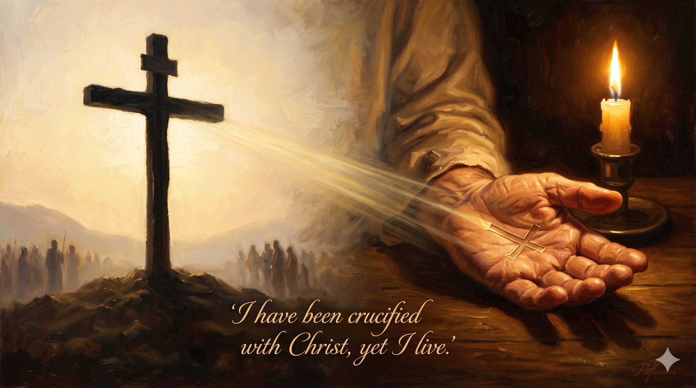

감옥 서재에서 촛불 하나에 의지해 편지를 쓰는 노년의 바울 — 그의 손목에 족쇄 자국이 선명하고, 양피지 위에는 "나는 그리스도와 함께 십자가에 못 박혔나니"라는 글귀가 크게 써져 있으며, 등 뒤 창문 너머로 새벽빛이 밝아오고 있다
"내가 그리스도와 함께 십자가에 못 박혔나니 그런즉 이제는 내가 사는 것이 아니요 오직 내 안에 그리스도께서 사시는 것이라 이제 내가 육체 가운데 사는 것은 나를 사랑하사 나를 위하여 자기 자신을 버리신 하나님의 아들을 믿는 믿음 안에서 사는 것이라" — 갈라디아서 2:20
갈라디아서 2장 20절은 바울 신학 전체를 한 절에 압축한 본문이라 해도 과언이 아닙니다. 이 구절은 안디옥에서 베드로를 책망한 직후, 바울이 자신의 복음 이해를 선언하는 자리에서 나옵니다. "내가 그리스도와 함께 십자가에 못 박혔나니" — 이것은 과거의 사건입니다. 바울이 예수님의 십자가 처형 현장에 있었다는 의미가 아니라, 믿음으로 예수님의 죽음 안에 연합되었다는 뜻입니다. 옛 자아, 율법 아래 있던 사울이 십자가에서 죽었습니다. 그러나 동시에 바울은 지금도 살아 있습니다. 이 역설이 복음의 핵심입니다.
"이제는 내가 사는 것이 아니요 오직 내 안에 그리스도께서 사시는 것이라" — 바울은 자신의 삶의 주어(主語)가 바뀌었다고 말합니다. 더 이상 자기 의지와 욕망이 삶을 이끌지 않습니다. 그리스도가 삶의 동력이 됩니다. 그러나 이것이 수동적인 체념이 아닙니다. "나를 사랑하사 나를 위하여 자기 자신을 버리신 하나님의 아들을 믿는 믿음 안에서 사는 것이라" — 바울은 그 사랑에 응답하며 능동적으로 살아갑니다. 죽음에서 나온 삶, 자기 부정에서 나온 자유, 이것이 복음이 열어주는 새로운 실존입니다.

두 개의 나란한 십자가 — 하나는 텅 빈 골고다 언덕의 십자가이고, 다른 하나는 한 사람의 가슴 위에 새겨진 작은 십자가 문신. "나는 그와 함께 죽었고, 그는 내 안에 살아계신다"는 의미를 시각적으로 대비시킨 영적 조명 사진
"내가 사는 것이 아니다"라는 고백은 자기혐오나 자기 부정이 아닙니다. 이것은 가장 깊은 의미에서의 해방입니다. 스스로를 증명하고, 인정받고, 살아남으려는 끊임없는 수고로부터의 자유입니다. 바울은 이 고백 덕분에 감옥에서도 찬송하고, 죽음 앞에서도 평안할 수 있었습니다. 오늘 나를 지치게 하는 것이 무엇인지 돌아보십시오. 혹시 '내가 사는 것'의 무게 때문은 아닌지요.
"나를 사랑하사 나를 위하여 자기 자신을 버리신" — 바울은 예수님의 사랑을 추상적 교리가 아닌 자신을 향한 개인적인 사랑으로 붙들었습니다. 이 믿음이 그의 삶 전체를 지탱하는 기초였습니다. 우리도 오늘 이 질문을 붙잡아 보십시오. "예수님이 나를 사랑하셔서 자기 자신을 버리셨다 — 이것이 지금 내 삶에서 현실로 느껴지는가?" 이 사랑이 현실이 될 때, 삶의 주어도 조금씩 바뀌기 시작합니다.
당신의 옛 자아는 이미 십자가에 못 박혔습니다.
이제 사는 것은 당신 안에 계신 그리스도입니다.
오늘 삶의 주어를 그분께 내어드리십시오.